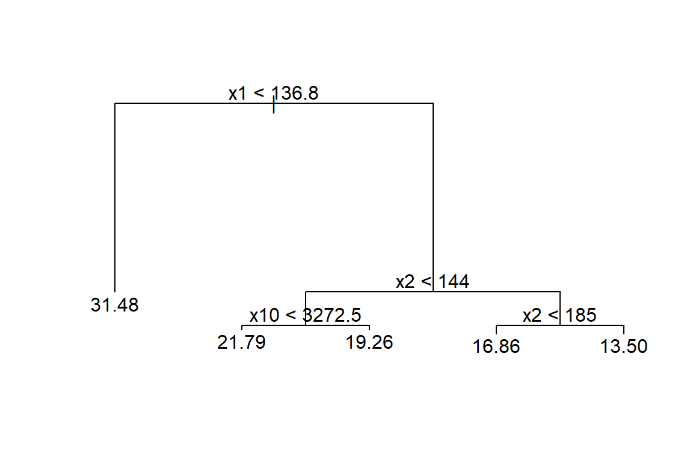

1 Árboles de regresión
Los árboles de regresión/clasificación fueron propuestos por Leo Breiman en el libro de Breiman et al. (1984) y son árboles de decisión que tienen como objetivo predecir la variable respuesta \(Y\) en función de covariables.
Árboles
A continuación la imagen de un árbol común.
A continuación la imagen de un árbol seco e invertido.

Esta forma invertida es la forma de los árboles de regresión y clasificación.

Tipos de árboles
Los árboles se pueden clasificar en dos tipos que son:
- Árboles de regresión en los cuales la variable respuesta \(y\) es cuantitativa.
- Árboles de clasificación en los cuales la variable respuesta \(y\) es cualitativa.

El presente capítulo está destinado a árboles de clasificación, los árboles de regresión se explican en el capítulo 2.
Árbol de regresión
Un árbol de regresión consiste en hacer preguntas de tipo ¿\(x_k \leq c\)? para cada una de las covariables, de esta forma el espacio de las covariables es divido en hiper-rectángulos y todas las observaciones que queden dentro de un hiper-rectángulo tendrán el mismo valor estimado \(\hat{y}\).
En la siguiente figura se ilustra el árbol en el lado izquierdo y la partición del espacio en el lado derecho. La partición del espacio se hace de manera repetitiva para encontrar las variables y los valores de corte \(c\) de tal manera que se minimice la función de costos \(\sum_{i=1}^{i=n} (y_i - \hat{y}_i)^2\).
Los pasos para realizar la partición del espacio son:
- Dado un conjunto de covariables (características), encontrar la covariable que permita predecir mejor la variable respuesta.
- Encontrar el punto de corte \(c\) sobre esa covariable que permita predecir mejor la variable respuesta.
- Repetir los pasos anteriores hasta que se alcance el criterio de parada.
Algunas de las ventajas de los árboles de regresión son:
- Fácil de entender e intrepretar.
- Requiere poca preparación de los datos.
- Las covariables pueden ser cualitativas o cuantitativas.
- No exige supuestos distribucionales.
Para explicaciones más detalladas sobre las técnicas basadas en árboles recomendamos consultar el capítulo 8 de James et al. (2013) y se recomienda también ver el siguiente video con una explicación sencilla sobre árboles.
Paquetes de R para árboles
Los paquetes más conocidos para construir árboles son:
Existen otros paquetes que el lector puede consultar en la sección Recursive Partitioning de CRAN Task View: Machine Learning & Statistical Learning.
Paquete rpart
En esta sección se mencionan algunos de los paquetes más comunes para implementar árboles de regresión.
El paquete rpart de Therneau and Atkinson (2023) es uno de los paquetes que se pueden usar para crear árboles de regresión. La función para crear un árbol de regresión es rpart, a continuación la estructura de la función.
Paquete tree
Otro paquete útil para árboles de regresión es tree de Ripley (2023). La función para crear un árbol de regresión es tree, a continuación la estructura de la función.
tree(formula, data, weights, subset,
na.action = na.pass, control = tree.control(nobs, ...),
method = "recursive.partition",
split = c("deviance", "gini"),
model = FALSE, x = FALSE, y = TRUE, wts = TRUE, ...)Ejemplo con el paquete rpart
En este ejemplo se busca crear árbol que explique la variable respuesta \(y\) en función de las covariables \(x_1\) a \(x_{11}\), los datos provienen del ejercicio 9.5 del libro de Montgomery, Peck and Vining (2003). El paquete MPV de Braun and MacQueen (2024) contiene todos los datos que acompañan al libro.
A continuación se muestra el encabezado de la base de datos y la definición de las variables.

Nota: Type of transmission (1=automatic, 0=manual).
Antes de iniciar es necesario revisar si hay NA's y eliminarlos.
library(MPV) # This package contains the dataset
table.b3[22:26, ] # Can you see the missing values?## y x1 x2 x3 x4 x5 x6 x7 x8 x9 x10 x11
## 22 21.47 360.0 180 290 8.4 2.45 2 3 214.2 76.3 4250 1
## 23 16.59 400.0 185 NA 7.6 3.08 4 3 196.0 73.0 3850 1
## 24 31.90 96.9 75 83 9.0 4.30 2 5 165.2 61.8 2275 0
## 25 29.40 140.0 86 NA 8.0 2.92 2 4 176.4 65.4 2150 0
## 26 13.27 460.0 223 366 8.0 3.00 4 3 228.0 79.8 5430 1El objeto datos tiene la base de datos sin las líneas con NA, lo mismo se hubiese podido realizar usando la función na.omit. La base de datos tiene 30 filas y 12 columnas.
Dibujuemos el árbol con prp que es una función del paquete rpart.plot de Milborrow (2024).

Construyamos nuevamente el árbol pero explorando todas las opciones de la función prp.
prp(mod1, main="",
nn = TRUE, # display the node numbers
fallen.leaves = TRUE, # put the leaves on the bottom of the page
shadow.col = "gray", # shadows under the leaves
branch.lty = 3, # draw branches using dotted lines
branch = .5, # change angle of branch lines
faclen = 0, # faclen = 0 to print full factor names
trace = 1, # print the auto calculated cex, xlim, ylim
split.cex = 1.2, # make the split text larger than the node text
split.prefix = "is ", # put "is " before split text
split.suffix = "?", # put "?" after split text
split.box.col = "lightblue", # lightgray split boxes (default is white)
split.border.col = "darkgray", # darkgray border on split boxes
split.round = 0.5) # round the split box corners a tad## cex 1 xlim c(0, 1) ylim c(0, 1)
Usando la información del árbol anterior es posible predecir el valor de \(y\). Por ejemplo:
- Si un nuevo auto tiene \(x_9=70\) y \(x_2=100\), entonces \(\hat{y}=20\).
- Si un nuevo auto tiene \(x_9=60\) y \(x_2=150\), entonces \(\hat{y}=28\).
Como en el árbol anterior solo aparecen las variables \(x_2\) y \(x_9\) se recomienda volver a construir el árbol sólo con ellas.
Este árbol por tener solo dos covariables se puede representar de la siguiente forma:
with(datos, plot(x=x2, y=x9))
abline(h=66, lty='dashed', col='blue')
segments(x0=144, y0=66, x1=144, y1=82, lty='dashed', col='blue')
text(x=120, y=63, labels='y^=28', col=4)
text(x=90, y=73, labels='y^=20', col=4)
text(x=190, y=73, labels='y^=16', col=4)
Para predecir los valores de \(y\) se puede usar la función predict. A continuación el código para predecir la respuesta en los dos casos anteriores.
## 1 2
## 19.66875 28.06625En este ejemplo los datos originales se usaron como conjunto de entrenamiento y prueba debido a que solo se cuentan con 30 observaciones.
Entre más cerca estén las \(\hat{y}\) de los \(y\) observados se puede decir que el modelo es mejor. A continuación la correlación entre \(\hat{y}\) y \(y\).
## [1] 0.8300304¿Qué opina de este valor?
A continuación un diagrama de dispersión entre \(\hat{y}\) y \(y\).
Ejemplo con el paquete tree
Aquí vamos a repetir el ejemplo anterior con otro paquete.
Para dibujar el árbol se puede usar las siguientes instrucciones.

Entre más cerca estén las \(\hat{y}\) de los \(y\) observados se puede decir que el modelo es mejor. A continuación la correlación entre \(\hat{y}\) y \(y\).
## [1] 0.9265051